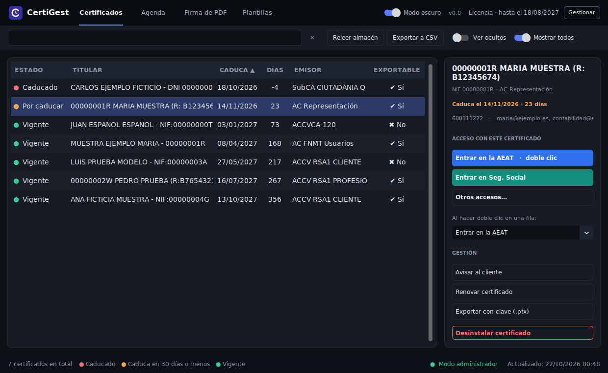
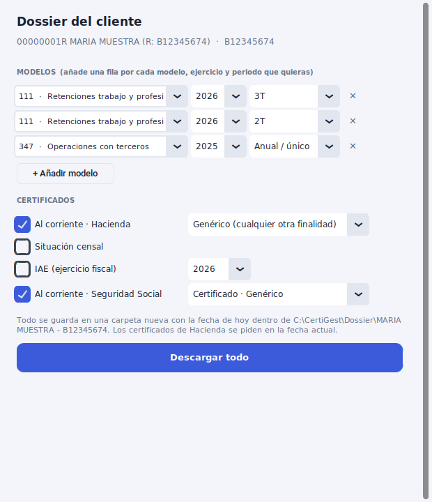
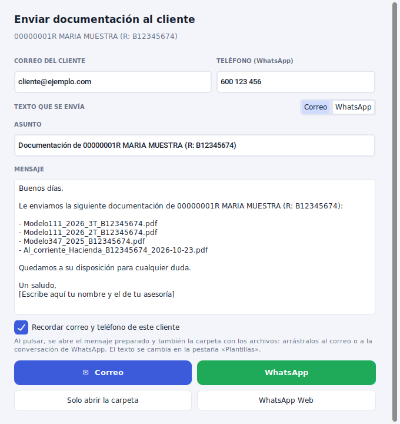
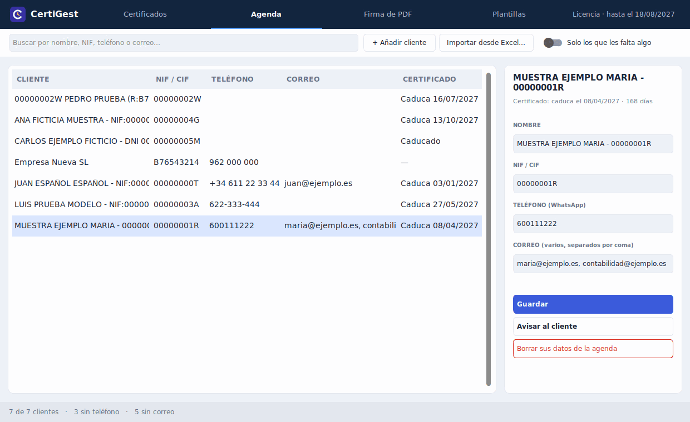
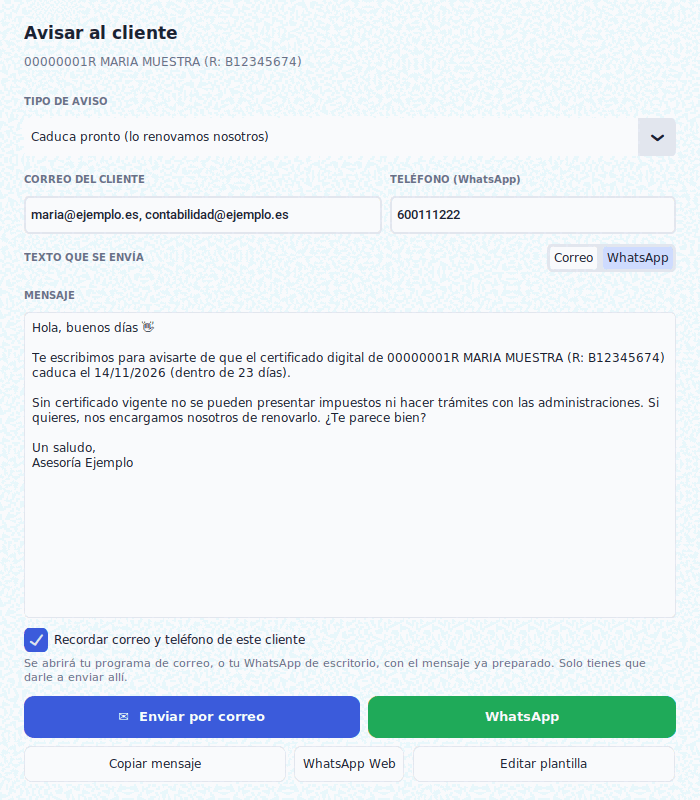
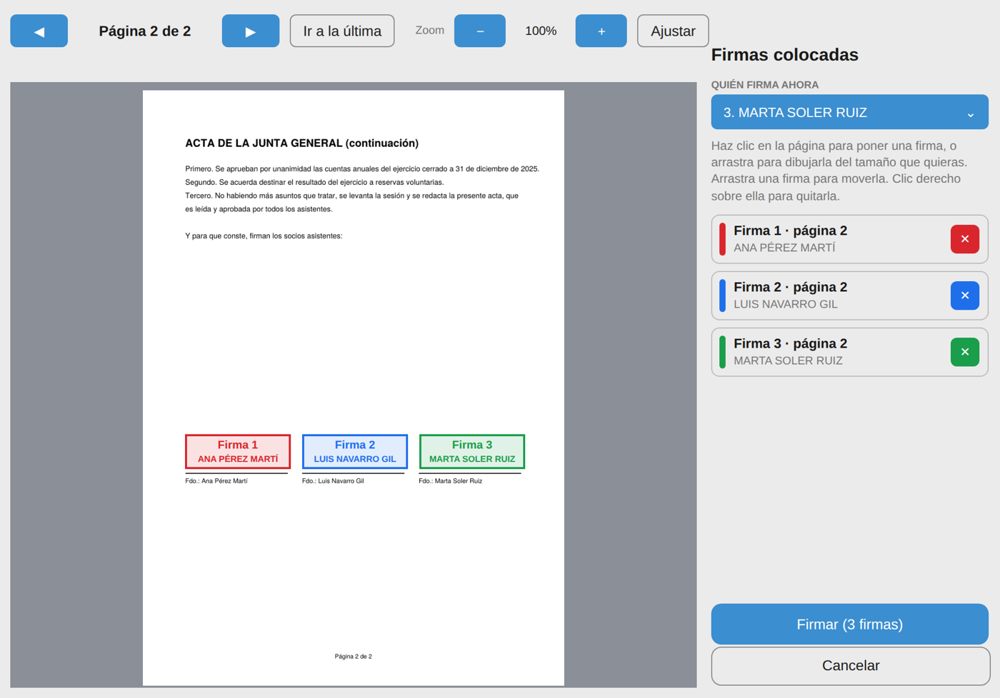
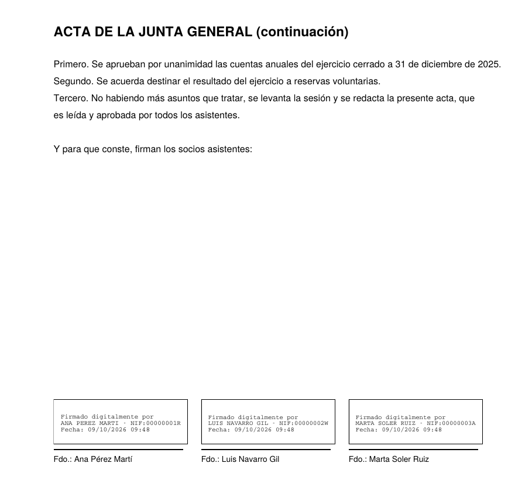
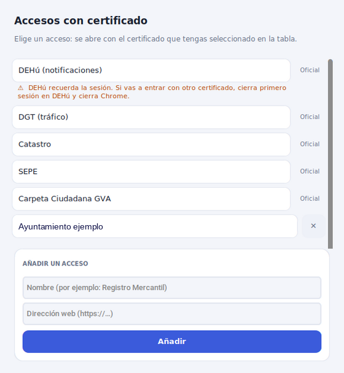

Encuentra al instante
Escribe parte del nombre, el NIF/CIF o la empresa y la tabla se filtra al momento, aunque tengas cientos de certificados instalados.
Para asesorías y gestorías
Escribe el nombre, el NIF o el CIF y CertiGest encuentra el certificado de tu cliente entre cientos. Entra en la AEAT y la Seguridad Social con ese certificado ya elegido, descarga sus declaraciones y justificantes, y avísale antes de que caduque.
Windows 10 y 11 · Instalador de un solo archivo · Sin tarjeta ni registro

Qué hace
Escribe parte del nombre, el NIF/CIF o la empresa y la tabla se filtra al momento, aunque tengas cientos de certificados instalados.
AEAT, Seguridad Social, DEHú, DGT, Catastro, SEPE o la Carpeta Ciudadana. Chrome usa ese certificado sin que lo elijas en ninguna ventana. Un certificado por ventana, sin mezclar sesiones de clientes.
Al corriente de Hacienda y de la Seguridad Social, situación censal, IAE y las declaraciones presentadas, con el certificado del cliente. Se guardan ordenados por cliente.
¿Te piden los dos últimos 111, el 347 y los certificados de estar al corriente? Elige todo de una vez y se descarga en una carpeta con la fecha.
Ve los caducados de los últimos 30 días y los que caducan en los próximos 30, con los días exactos y los plazos que tú cambies.
Se abre tu correo o tu WhatsApp con el mensaje ya escrito, para avisar de la caducidad o para enviar la documentación descargada. Tú solo pulsas enviar.
Firma actas y documentos con el certificado, colocando cada firma con el ratón. Pueden firmar varios socios a la vez, cada uno con el suyo.
Un botón te lleva a la FNMT o la ACCV con el certificado elegido, y puedes sacar una copia protegida con contraseña (.pfx) de los que se pueden exportar.
Novedad · Descargas
Selecciona el certificado, elige qué necesitas y CertiGest lo descarga. Todo queda ordenado en la carpeta del cliente.


Agenda y avisos
CertiGest guarda el teléfono y el correo de cada cliente y, cuando un certificado está a punto de caducar, te prepara el mensaje. Tú lo revisas y le das a enviar.

1. Selecciona el certificado y pulsa Avisar al cliente.
2. Elige el tipo de aviso y revisa el texto.
3. Pulsa WhatsApp o Enviar por correo y envíalo desde allí.
Para WhatsApp hace falta tener la aplicación de WhatsApp de escritorio o poder abrir WhatsApp Web. Si no te reconoce la aplicación, hay un botón para abrir WhatsApp Web.

Firmar PDF
Selecciona el certificado, elige el PDF y marca con el ratón dónde va cada firma, en la hoja que quieras. Pensado para actas, asambleas y juntas, donde hay que firmar en varios sitios y a veces firman varios socios.

1. Selecciona el certificado y pulsa Firmar PDF.
2. Elige el documento y pulsa Elegir en el documento dónde firmar.
3. Haz clic donde quieras la firma (o varias) y pulsa Firmar.
Es una firma electrónica hecha con tu certificado. La fecha y hora que muestra el recuadro son las de tu ordenador. Con certificados en tarjeta o token, Windows pide el PIN; todavía no lo hemos probado con todos los modelos.

Tus propias páginas
Además de los accesos que ya trae, puedes crear los tuyos: escribes el nombre (el ayuntamiento, un registro…) y la dirección de la página, y tienes un botón más. Se abre con el certificado que hayas seleccionado, igual que los demás.
Los accesos que trae el programa los mantenemos nosotros y se corrigen solos si una sede cambia de dirección.

Privacidad
No subimos ni copiamos certificados, nombres, NIF ni claves a ningún servidor.
Se conecta a internet únicamente para ver si hay versión nueva, actualizar la lista de accesos y comprobar si una licencia ha sido anulada. La licencia se comprueba en tu propio PC.
No hay registro ni contraseñas. Más detalle en la política de privacidad.
Prueba y licencia
La licencia se activa con una clave ligada a tu PC. No hay cuentas ni contraseñas que gestionar.
Ejecuta el instalador. Durante 10 días CertiGest funciona completo.
Usa todas las funciones con tus propios certificados. No hace falta tarjeta ni registro.
Pagas con tarjeta e indicas el código de tu PC (CertiGest te lo muestra y lo copias con un clic). Recibes tu factura con IVA y una clave por correo.
Copias la clave en CertiGest y queda activado durante un año. Funciona sin conexión a internet.
Precios
Licencia anual para profesionales y empresas. Los precios no incluyen IVA: se añade el 21 % en la factura. No hay cobro automático: antes de que caduque CertiGest te avisa y puedes renovarla al mismo precio.
En el pago verás el total con IVA: 72,59 € (59,99 € + 21 % de IVA). Escribe en el formulario el código de tu PC (CertiGest → Licencia → Copiar) y tus datos de facturación. Recibirás la clave por correo cuando se confirme el pago. ¿Prefieres pagar por transferencia? Solicítala por correo. Consulta las condiciones de venta.
Preguntas frecuentes
Sí. CertiGest abre las sedes en Google Chrome y le indica qué certificado usar, así que tienes que tenerlo instalado.
CertiGest muestra los certificados que Windows tiene disponibles en el almacén personal del equipo. Todavía no lo hemos probado con todas las tarjetas ni lectores, así que si trabajas con ellos, comprueba tu caso con los 10 días de prueba o escríbenos antes de comprar.
No. CertiGest es solo para Windows 10 y 11.
Sí. El primer acceso se abre en tu Chrome normal. Si ya hay un Chrome abierto, CertiGest abre una ventana nueva e independiente con el certificado elegido, así que no choca con otros programas ni con tus ventanas abiertas. Esa ventana nueva no trae tus contraseñas guardadas ni extensiones, pero sí tus marcadores.
Sí. Seleccionas el certificado, eliges el PDF y marcas en el visor dónde va cada firma, en la hoja que quieras y tantas veces como necesites. Si firman varios socios, añades sus certificados (instalados en ese PC) y cada uno firma en su sitio en una sola pasada. Se guarda una copia «_firmado» y el original no se modifica. La firma la hace Windows con el certificado, así que funciona aunque no sea exportable. Con certificados en tarjeta o token, Windows pedirá el PIN; no lo hemos probado todavía con todos los modelos.
En la pestaña Agenda pulsa Importar desde Excel… y elige tu archivo (.xlsx o .csv; si lo tienes en .xls antiguo, guárdalo antes como .xlsx). CertiGest detecta las columnas, te enseña una vista previa y reconoce a cada cliente por su NIF/CIF o, si no lo tienes en el Excel, por su nombre. Por defecto solo rellena los datos que faltan y guarda una copia de tu agenda anterior.
No. CertiGest abre tu programa de correo o tu WhatsApp de escritorio con el mensaje ya escrito y la persona elegida, y tú le das a enviar. Así revisas el mensaje antes y sale desde tu propio correo y tu propio número.
AEAT, Seguridad Social (Import@ss), DEHú, DGT, Catastro, SEPE y la Carpeta Ciudadana de la Generalitat Valenciana. Además, puedes añadir las que tú quieras.
Para buscar y ver tus certificados, no. Internet solo se usa para las actualizaciones, la lista de accesos y para saber si una licencia ha sido anulada. La licencia se comprueba en tu propio PC, así que funciona igual sin conexión.
No. Windows muestra ese aviso con cualquier programa nuevo que todavía no tiene firma digital. Pulsa Más información y luego Ejecutar de todas formas. Si prefieres no hacerlo, puedes escribirnos y resolvemos tus dudas antes.
CertiGest es un programa nuevo y todavía no es conocido para Windows, por eso algunos equipos lo frenan aunque no tenga nada malo. Prueba esto, por orden: 1) En el aviso de SmartScreen pulsa Más información y Ejecutar de todas formas. 2) Si Chrome o Edge no te dejan conservar el archivo, abre la lista de descargas, pulsa los tres puntos del archivo y elige Conservar. 3) Si Windows 11 muestra «Smart App Control bloqueó una parte de esta aplicación», esa protección no permite excepciones; escríbenos a info@certigest.es y te ayudamos a instalarlo. Si prefieres, puedes comprobar el archivo en virustotal.com antes de abrirlo.
CertiGest te pide la clave de licencia. No se borra nada de tu equipo ni de tus certificados. Al pegar la clave vuelves a usarlo con normalidad.
No. La clave se genera para el PC que nos indicas y para quien la compra; en otro equipo no se activa. Si necesitas más PCs, pide una licencia por cada uno (con precio especial).
Escríbenos con el código del PC nuevo (lo ves en la ventana de licencia de CertiGest) y te preparamos una clave para ese equipo sin cobrarte otra licencia mientras la tuya siga vigente. La clave del PC anterior se anula.
No. No hay cobros automáticos. CertiGest te avisa 30 días, 7 días y 1 día antes de que caduque, y renuevas pidiendo la clave nueva; el año nuevo empieza cuando termina el anterior, así que no pierdes ningún día.
Para que Chrome elija el certificado automáticamente al entrar en la AEAT y en la Seguridad Social, CertiGest escribe una norma temporal de Chrome que solo Windows permite a un administrador. La norma se retira sola.
No. Los certificados no salen de tu PC: CertiGest los lee del almacén de Windows y trabaja en local. Solo se conecta a internet para comprobar si hay una versión nueva, para actualizar la lista de accesos a las sedes y para saber si una licencia ha sido anulada. Más detalle en la política de privacidad.
La lista de accesos se actualiza por internet, así que lo corregimos nosotros y te llega al abrir el programa, sin que reinstales nada.
Descárgalo, pruébalo 10 días con tus propios certificados y decide. Si tienes dudas o necesitas una licencia a medida, escríbenos.
info@certigest.es